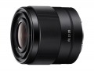
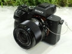

器材库 > 35mm画幅AF定焦镜头 > FE 28/2

详细规格
发布日期
2015-03-04
厂家推荐价格
2,999.00 （人民币）
焦距
28mm
等效35mm画幅焦距
42mm
最大光圈
f/2
最小光圈
f/22
镜头结构
9片/8组
非球面镜片
3片
低/超低色散镜片
2片
光圈叶片
9片
最近对焦距离
29cm
最大放大倍率
0.13倍
滤镜口径
49mm
镜头卡口
Sony E
防抖
否
颜色
黑色
尺寸
约64 x 60mm
重量
约200g
muduo2015-05-12 12:484.75 分
操作性 4.50耐用性 4.50性价比 5.00解像力 5.00色彩还原 5.00机械结构 4.50
llliiiilll2015-04-09 17:374.75 分
操作性 5.00耐用性 5.00性价比 5.00解像力 4.50色彩还原 4.50机械结构 4.50
产品图 / 样片

评测 / 相关文章
该产品暂无存档的评测文章